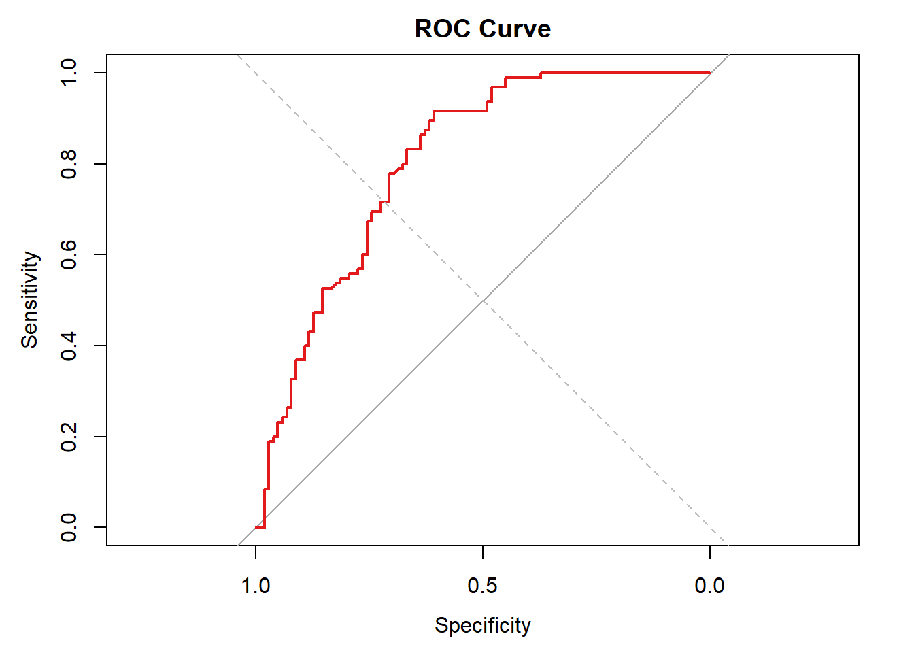
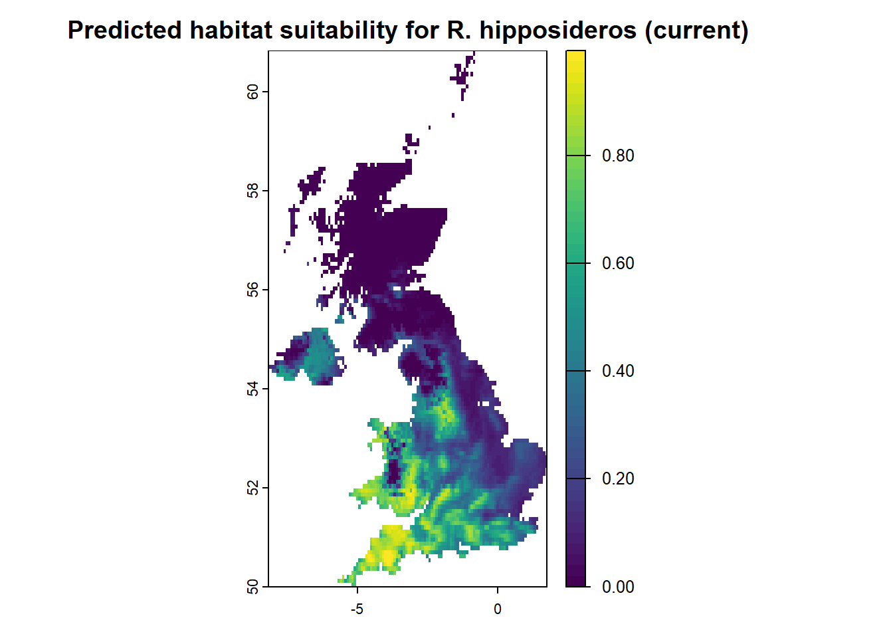
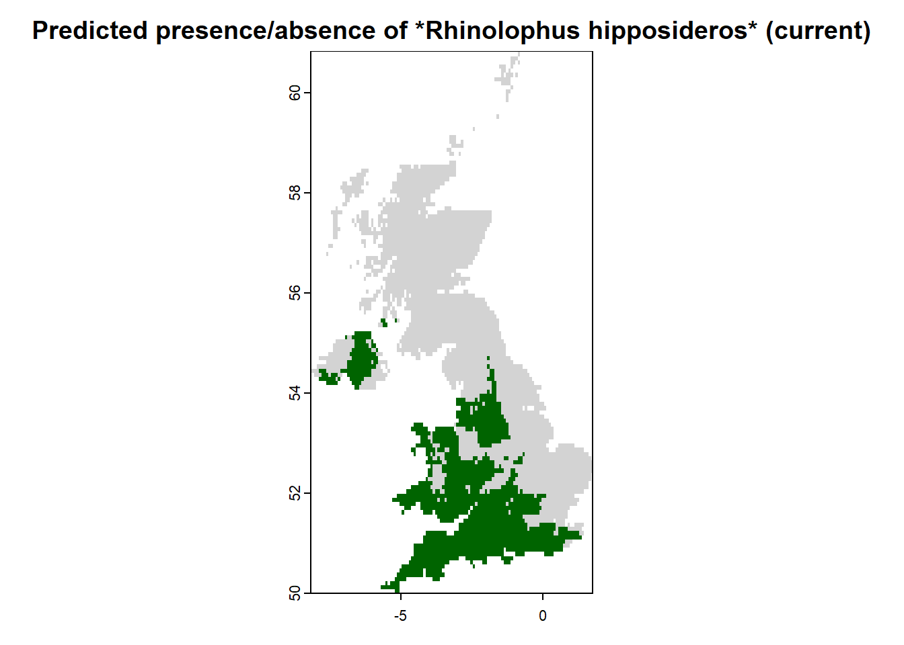

library(caret)
set.seed(123)
# Generate an index that assign 70% of data to training data
trainIndex <- createDataPartition(sdm_df_clean$pa, p = .7, list = FALSE)
sdm_df_train <- sdm_df_clean[trainIndex, ]
sdm_df_test <- sdm_df_clean[-trainIndex, ]
# Fit model on training data
glm_multi_train <- glm(pa ~ poly(elevation, 2) + poly(bio_1, 2) + poly(bio_12, 2),
data = sdm_df_train,
family = binomial)
glm_step_train <- step(glm_multi_train , direction = "both", trace = FALSE)Assessment & Projection
After a species distribution model (SDM) has been fitted, the next critical steps are to assess its performance and project it across space or time. Model assessment ensures that the relationships identified between species occurrences and environmental predictors are robust, interpretable, and generalisable. Projection then allows us to translate these relationships into maps of habitat suitability, either under current conditions or for future scenarios such as climate change.
Model assessment involves several interconnected steps:
Model fit: Examining how well the model explains the training data.
Model validation: Testing model predictions on independent data (data not used for fitting) to avoid overfitting and assess generalization.
Model evaluation: Calculating quantitative performance metrics on the validation data to objectively judge model quality.
A common and recommended approach is to split the available data into training and testing sets or use cross-validation methods. This ensures that evaluation statistics such as AUC or TSS reflect the model’s predictive ability rather than just its capacity to reproduce the training data.
Evaluation metrics fall into two main types:
Threshold-independent metrics like AUC and Continuous Boyce Index evaluate the model’s discrimination ability without requiring a binary classification.
Threshold-dependent metrics** like sensitivity, specificity, and True Skill Statistic (TSS) require converting continuous predictions into binary outcomes and assess classification accuracy at selected thresholds.
Together, these evaluation metrics, when applied on validation data, provide a comprehensive picture of model performance.
Projection extends model application by using fitted relationships to predict species distributions across geographic space, or under different environmental conditions. This is particularly powerful for biodiversity monitoring, invasive species risk mapping, and forecasting impacts of global change. However, projections must always be interpreted in light of uncertainties stemming from data quality, model choice, and environmental scenarios.
NoteEssential SDM Workflow: Fitting, Validating, Evaluation and Projection
When building species distribution models (SDMs), it’s essential to distinguish between model fit, model validation, model evaluation, and final projection. These are distinct but interconnected steps in a robust modelling workflow.
Model fit
Refers to how well a model explains the data it was trained on. This can be assessed using residuals, likelihood measures, or internal performance statistics. However, good fit to training data does not guarantee predictive accuracy — models can overfit, especially with small sample sizes or many predictors.
Model validation
Evaluates how well the model generalizes to new data. This requires testing predictions on data not used for model fitting, typically via: - Data splitting (e.g., 70% training, 30% testing), or
- Cross-validation (e.g., k-fold, spatial block).
Validation ensures the model’s performance is not just memorizing patterns in the training data, but reflects true predictive power.
Model evaluation
Involves calculating quantitative performance metrics (e.g., AUC, TSS, Boyce Index) on the validation (test) data. This step quantifies how well the model distinguishes presences from absences, both: - Threshold-independently (e.g., AUC, Boyce), and
- Threshold-dependently (e.g., sensitivity, specificity, TSS).
Evaluation provides objective evidence of model reliability.
Final projection
Once the model has been validated and evaluated: - You can refit the final model using all available data (training + test) to maximize information. - Use this full model to project species distributions across space (e.g., habitat suitability maps) or time (e.g., future climate scenarios).
Why refit with all data?
To improve accuracy of projections, especially for rare species or sparse datasets. But remember: this projection step should only happen after validation is complete.
Best practice workflow summary:
- Split data → for training and validation.
- Fit model on training data.
- Validate & evaluate on test data.
- Refit model on all data.
- Project using the refitted model.
This approach supports both scientific rigor and reliable application of SDMs in conservation, forecasting, and spatial planning.
1. Model evaluation
Model evaluation is a key step in SDM analysis. Since SDMs typically predict a continuous probability of occurrence or relative suitability, while field data are often binary (presence vs. absence/pseudo-absence), we need appropriate metrics to judge model quality.
A critical principle in SDM evaluation is to assess model predictions on independent data not used during model fitting. This can be achieved by:
Data splitting: dividing the dataset into training and testing subsets, fitting the model only on training data, then evaluating on testing data.
Cross-validation: repeatedly splitting the data into folds, training on some folds and testing on the others, to obtain robust performance estimates. Evaluating models on independent data helps to avoid overly optimistic assessments caused by overfitting and better reflects how the model will perform in real-world applications.
After a model is fitted, and data have been partitioned appropriately, evaluation metrics are calculated on the validation (test) data to assess predictive performance based on either
Threshold-independent or Threshold-dependent metrics.
Following best-practice, we now split our data into training and testing subsets and refit the GLM model using only the training data before performing any validation.
1.1 Threshold-independent evaluation
The most widely used threshold-independent measure is the area under the ROC curve (AUC). AUC evaluates how well the model distinguishes presences from absences across all possible thresholds. An AUC of 0.5 indicates random performance, while values above 0.7 are typically considered fair, and above 0.9 excellent (Araujo et al. 2005).
library(pROC)
# Predict on test data
glm_predict_test <- predict(glm_step_train , newdata = sdm_df_test, type = "response")
# 'Observed' test data (presence/pseudoabsence)
obs_test <- sdm_df_test$pa
# Evaluate with ROC and AUC on test data
roc_glm <- pROC::roc(obs_test, glm_predict_test)
auc_glm <- pROC::auc(roc_glm)
# Print AUC
print(auc_glm)Area under the curve: 0.8401# Plot ROC curve
plot(roc_glm, col = "#e31a1c", lwd = 2, main = "ROC Curve")
abline(a = 0, b = 1, lty = 2, col = "grey")
NoteHow to interpret the ROC curve
- The ROC curve plots sensitivity (true positive rate) against 1 – specificity (false positive rate) across all thresholds.
- A model with no predictive ability follows the diagonal line (AUC ≈ 0.5).
- Curves that bow towards the upper-left corner indicate stronger discrimination between presences and absences.
- The area under the curve (AUC) provides a summary metric:
- AUC = 0.5 → random predictions
- 0.7 ≤ AUC < 0.8 → fair
- 0.8 ≤ AUC < 0.9 → good
- AUC ≥ 0.9 → excellent
- AUC = 0.5 → random predictions
Always interpret AUC together with ecological reasoning and other evaluation measures
(e.g., TSS, Boyce index), since AUC alone can be misleading if prevalence is unbalanced
or sampling design introduces bias.
The Continuous Boyce Index (CBI) is an evaluation metric used for species distribution models (SDMs) and habitat suitability models that are built using presence-only data. The CBI is particularly useful for SDMs, as it directly evaluates how predictions for observed presences deviate from a random distribution of available habitat suitability values. It ranges from -1 (counter-predictive), to 0 (no better than random), to +1 (perfect agreement between model predictions and presence distribution).
library(ecospat)
# Compute Continuous Boyce Index (CBI)
boyce_res <- ecospat.boyce(
fit = glm_predict_test, # model predictions
obs = glm_predict_test[obs_test == 1], # predictions at presence points
nclass = 0, # automatic binning
window.w = "default" # default moving window
)
boyce_res$Spearman.corNULL
NoteHow to interprete the Boyce curve
- X-axis (suitability): predicted suitability scores from the SDM.
- Y-axis (predicted/expected ratio): how much more (or less) frequently presences are found in each suitability class than expected at random.
Guidelines:
- A flat line near 1 → model performs no better than random.
- An increasing curve, with ratios >1 in high suitability bins → good model performance.
- Ratios <1 in high suitability bins → the model may be misleading.
While P/E ratios in the plot may exceed 1, the Boyce Index correlation ranges from -1 to +1..
1.2 Threshold-dependent evaluation
To compute threshold-dependent metrics, we need to choose a threshold that converts continuous probabilities into binary predictions. Several rules exist (see Liu et al., 2005), such as:
Maximizing sensitivity + specificity
Equal sensitivity and specificity
Fixed probability cutoffs (e.g., 0.5)
Here we use the PresenceAbsence package to determine an optimal threshold and then compute metrics like sensitivity, specificity, and the True Skill Statistic (TSS).
library(PresenceAbsence)
# Construct PresenceAbsence dataframe
# Ensure observed and predicted values are numeric
pa_df_test <- data.frame(
ID = seq_along(obs_test),
observed = as.numeric(as.character(obs_test)),
predicted = as.numeric(glm_predict_test)
)
# Remove any rows with missing values
pa_df_test <- pa_df_test[complete.cases(pa_df_test), ]
# Find threshold
(opt_thresh <- PresenceAbsence::optimal.thresholds(
DATA= pa_df_test,
opt.methods = c('MaxSens+Spec', 'Sens=Spec', 'MinROCdist', 'MaxKappa'))) Method predicted
1 MaxSens+Spec 0.35
2 Sens=Spec 0.51
3 MinROCdist 0.50
4 MaxKappa 0.35# Use one threshold (e.g., MaxSens+Spec)
chosen_thresh <- opt_thresh$predicted[opt_thresh$Method == 'MaxSens+Spec']
# Classify predictions
pred_binary <- ifelse(as.numeric(glm_predict_test) >= chosen_thresh, 1, 0)
# Confusion matrix
cm <- table(Observed = obs_test, Predicted = pred_binary)
print(cm) Predicted
Observed 0 1
0 70 32
1 8 87# Compute sensitivity, specificity, TSS
sensitivity <- sum(pred_binary == 1 & obs_test == 1) / sum(obs_test == 1)
specificity <- sum(pred_binary == 0 & obs_test == 0) / sum(obs_test == 0)
tss <- sensitivity + specificity - 1
list(ConfusionMatrix = cm,
Sensitivity = sensitivity,
Specificity = specificity,
TSS = tss) $ConfusionMatrix
Predicted
Observed 0 1
0 70 32
1 8 87
$Sensitivity
[1] 0.9157895
$Specificity
[1] 0.6862745
$TSS
[1] 0.602064
NoteChoosing thresholds for binary predictions
Species distribution models typically produce continuous predictions (relative suitability or probability of occurrence).
To evaluate performance or produce presence/absence maps, these need to be converted into binary predictions.
There is no single “best” threshold. Instead, different methods emphasize different trade-offs.
Here are four widely used options:
MaxSens+Spec
Maximizes the sum of sensitivity (true positive rate) and specificity (true negative rate).
→ Balanced choice when false positives and false negatives are equally costly.Sens=Spec
Selects the threshold where sensitivity and specificity are equal.
→ Useful when both error types are equally undesirable.MinROCdist
Minimizes the distance between the ROC curve and the perfect classifier point (0,1).
→ Robust option, often similar to MaxSens+Spec but less sensitive to skewed prevalence.MaxKappa
Maximizes Cohen’s Kappa statistic, which accounts for agreement expected by chance.
→ Historically popular in ecology, still informative for comparing classifiers.
It is good practice to report multiple thresholds.
This ensures transparency, allows comparison across studies, and lets end-users (e.g., conservation managers) choose the threshold best suited to their objectives (e.g., maximizing detection vs. minimizing false alarms).
Interpretation
AUC: reflects overall discriminatory ability, independent of any threshold.
Threshold-dependent metrics: provide information about model performance in classifying presences vs. absences at a chosen threshold.
TSS: balances sensitivity and specificity, commonly used in SDM studies.
In practice, both perspectives are valuable. Threshold-independent measures provide a broad sense of predictive skill, while threshold-dependent measures allow for more concrete classification performance.
2. Projection across space and time
Once a species distribution model has been calibrated and evaluated, the next step is projection: predicting habitat suitability across geographic space or future environmental scenarios. Projections enable us to identify potential ranges, assess climate change impacts, and inform conservation planning.
There are two main projection contexts:
Spatial projection: applying the model to current environmental layers across the study area to produce a habitat suitability map.
Temporal projection: applying the model to future climate scenarios (e.g., CMIP6 SSPs) to forecast potential range shifts.
::: {.callout-tip collapse=“true” icon=“globe”}
### Important considerations when projecting SDMs
Ensure predictor variables in the projection layers match the model in units, resolution, and extent.
Beware of extrapolation: predictions in environmental space outside the range of training data are uncertain.
For presence–pseudoabsence models, predictions remain relative suitability, not absolute probabilities.
When projecting to future climates, using ensembles of GCMs helps capture uncertainty. :::
2.1 Projecting the fitted GLM across current environmental layers
library(terra)
# Prepare environmental stack for projection
proj_stack <- Env_UK_stack[[c("bio_1", "bio_12", "elevation")]]
names(proj_stack) # needs to match predictors in glm_step[1] "bio_1" "bio_12" "elevation"# Predict relative suitability across the raster stack
glm_suitability_map <- terra::predict(proj_stack, glm_step, type = "response")
# Plot the predicted suitability
plot(glm_suitability_map,
main = "Predicted habitat suitability for R. hipposideros (current)",
col = viridis(50, option = "D"))
To support conservation decisions or map projected ranges, we often need binary predictions — areas where the species is likely present (1) or absent (0) — instead of continuous suitability values. We’ll now apply a threshold to the predicted suitability map and visualize this binary prediction.
We’ll use the threshold identified earlier (e.g., “MaxSens+Spec”) to reclassify the continuous map.
# Create binary prediction map: 1 = presence, 0 = absence
binary_map <- glm_suitability_map >= chosen_thresh
# Plot the binary prediction map
plot(binary_map,
main = "Predicted presence/absence of *Rhinolophus hipposideros* (current)",
col = c("lightgrey", "darkgreen"),
legend = FALSE)
legend("bottomleft", legend = c("Absence", "Presence"),
fill = c("lightgrey", "darkgreen"), bty = "n")
NoteWhy binary maps?
Binary SDM outputs are often used in applied contexts — for example:
Estimating species’ range size
Identifying priority conservation areas
Communicating results to decision-makers
But: Always interpret binary maps with caution. Thresholding reduces a continuous gradient to a yes/no decision, which can oversimplify ecological reality. That’s why it is recommend:
Reporting both continuous and binary maps
Explaining how the threshold was chosen
Being transparent about limitations
TipView interactive map of projected habitat suitability, presence/absence, and occurrence records
We can also explore an interactive version of the current habitat suitability map and binary map overlaid with occurrence records using Leaflet.
2.2 Projecting under future climate scenarios
library(terra)
# First, generate a raster stack for future climate and elevation data
# Resample Elev_UK raster to match Clim_cmip6_2041_2060_UK raster
Elev_UK_aligned_future <- terra::resample(Elev_UK, Clim_cmip6_2041_2060_UK, method = "bilinear")
# Crop to common extent
common_extent_future <- terra::intersect(terra::ext(Clim_cmip6_2041_2060_UK), terra::ext(Elev_UK_aligned_future))
Clim_UK_future_crop2 <- terra::crop(Clim_cmip6_2041_2060_UK, common_extent_future)
Elev_UK_future_crop2 <- terra::crop(Elev_UK_aligned_future, common_extent_future)
# Stack layers and name variables
Env_UK_stack_future <- c(Clim_UK_future_crop2 , Elev_UK_future_crop2)
names(Env_UK_stack_future) <- c(sub("^wc2\\.1_10m_", "", names(Clim_UK_crop2)), "elevation")
# Example: future CMIP6 scenario (SSP5-8.5, 2041-2060)
future_stack <- Env_UK_stack_future[[c("bio_1", "bio_12", "elevation")]]
names(future_stack) <- c("bio_1", "bio_12", "elevation")
# Predict future relative suitability
future_suitability <- terra::predict(future_stack, glm_step, type = "response")
# Plot future suitability
plot(future_suitability,
main = "Projected habitat suitability under CMIP-6 (2041-2060)",
col = viridis(50, option = "E"))
NoteLiterature
Araujo, M. B., Pearson, R. G., Thuiller, W., & Erhard, M. (2005). Validation of species-climate impact models under climate change. Global Change Biology, 11(9), 1504–1513. doi:10.1111/j.1365-2486.2005.001000.x
Hirzel, A. H., Le Lay, G., Helfer, V., Randin, C., & Guisan, A. (2006). Evaluating the ability of habitat suitability models to predict species presences. Ecological Modelling, 199(2), 142–152. doi:10.1016/j.ecolmodel.2006.05.017
Liu, C., Berry, P. M., Dawson, T. P., & Pearson, R. G. (2005). Selecting thresholds of occurrence in the prediction of species distributions. Ecography, 28(3), 385–393. doi: doi:10.1111/j.0906-7590.2005.03957.x
Smith, A. B., & Santos, M. J. (2020). Testing the ability of species distribution models to infer variable importance. Ecography, 43(12), 1801–1813. [doi:10.1111/ecog.05317] (https://doi.org/10.1111/ecog.05317)
Wilson, K. A., Westphal, M. I., Possingham, H. P., & Elith, J. (2005). Sensitivity of conservation planning to different approaches to using predicted species distribution data. Biological Conservation, 122(1), 99–112.
Zurell, D., Franklin, J., König, C., Bouchet, P.J., Dormann, C.F., Elith, J., Fandos, G., Feng, X., Guillera-Arroita, G., Guisan, A., Lahoz-Monfort, J.J., Leitão, P.J., Park, D.S., Peterson, A.T., Rapacciuolo, G., Schmatz, D.R., Schröder, B., Serra-Diaz, J.M., Thuiller, W., Yates, Katherine L., Zimmermann, Niklaus E. & Merow, C. (2020). A standard protocol for reporting species distribution models. Ecography, 43(9), 1261–1277. doi:10.1111/ecog.04960